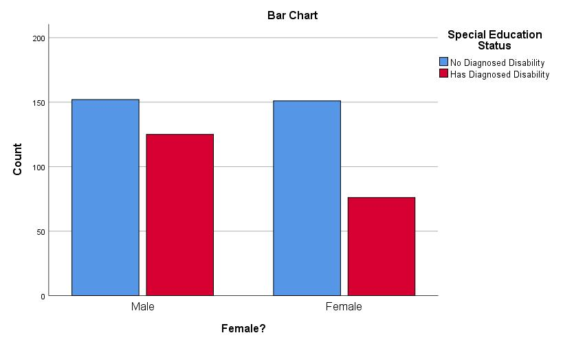
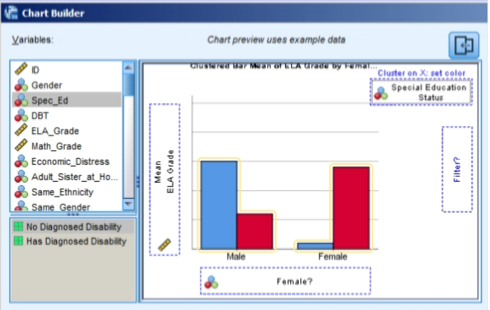
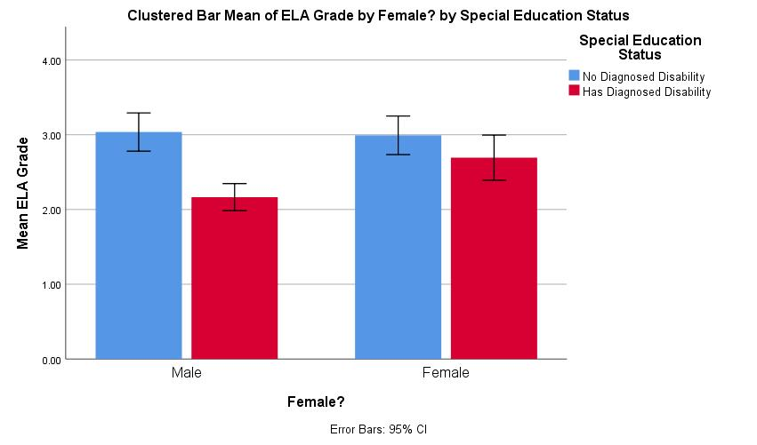
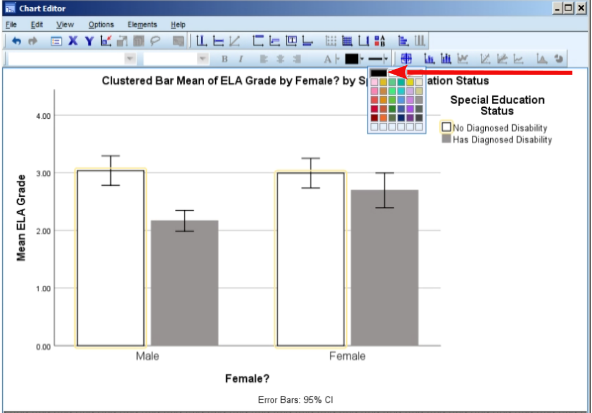
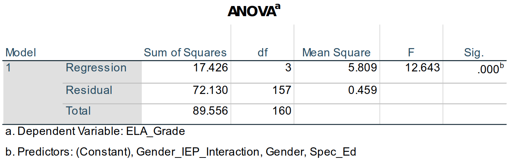
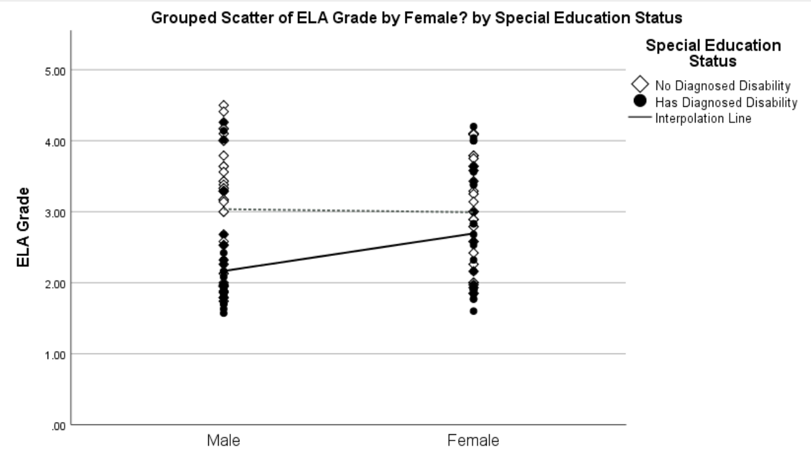

9 Linear Regression Modeling with SPSS, Part 2: More about ANOVAs and Dummy Coding
9.1 Overview
This chapter seeks to further demonstrate how to two correlated predictors can be handled with both an ANOVA and—more generally—with a linear regression model. It also presents more details about conducting an ANOVA and about interpreting dummy variables.
9.2 Data
We will use the EF_Slope_Data.sav dataset for these additional analyses, focusing on a different set of variables within that data set. We’ll now be looking at the effects of both gender and special education status on English / language arts (ELA) grades.
Please download this data file again from BlackBoard for use here. These are “synthetic” data, based on real data but changed to further help ensure the participants’ confidentiality. In addition to making it more secure, I have manipulated the data to make the relationships between gender, special education status, and ELA grades stronger for instruction here.
9.3 Relationships Between Dummy Variables: Crosstabs and \(χ\)2 Tests
Let us first look at the relationship between gender and special education status.
Both gender and special education status are dummy variables. Gender is set here to indicate whether a student is female, so 0 = not female1 and 1 = female. Special education status here indicates whether a student has an individualized education program (IEP), so 0 = no IEP and 1 = has an IEP.
We could compute a correlation between these two dummy variables (correlations per se are just descriptive), but more information and a more accurate representation of the variable is obtained by looking at a frequency table showing, e.g., how may females have or don’t have an IEP.
In SPSS, go to
Analyze > Descriptive Statistics > CrosstabsPlace
Genderin theRow(s)field andSpec_Edin theColumn(s)field. Since they are both nominal, SPSS knows to populate the table with frequency counts.In
Statistics...ensure theChi-squareis selected; none of the other options pertain here, so clickContinueUnder
Cells..., in theCountsarea, make sure thatObservedis selected. The rest of the options in theCells...dialogue can be interesting, but are pretty straight forward aren’t needed here.(Among the other options, I would normally also select
ExpectedunderCountsto see for myself how different the actual (observed) counts are from the expected: I can categorically say that it’s always a good idea to see the data for yourself and not just rely on a test to tell you what’s matters. However, I want to keep the output a bit clean to facilitate interpretation.)Under the list of variables to choose from, select
Display clustered bar chartsand make sureSuppress tablesis not selected.Click
OKIn the
Output, let us first look at theBar Chart. The chart shows exact values, so there is no need for confidence intervals.

Note that we could prettify this chart if we wanted to want to publish it, e.g., by creating better titles, including for the axes.The output starts with a summary of complete and missing data, including the
Gender * Spec_Ed Crosstabulation(“crosstab”)The
Chi-Square Teststable contains the following:Pearson Chi-Square2 is an uncorrected test for whether the counts in the cells differ from “expected” values. “Expected” here means that the proportions are the same, viz., that the proportion of students with IEPs is the same among the boys as it is among the girls. So, there may be more boys than girls, but the percent of boys with IEPs is not discernibly different than the percent of girls with IEPs.xxxBoth of these variables have two levels (male/female, has / doesn’t have an IEP), so comparisons of counts between them craetes a 2 \(\times\) 2 table. To compute the degrees of freedom for this test, we subtraddt 1 from the number of levels for each variable. We then multiply those values, or: \[(2\ df_{Gender} - 1) \times (2\ df_{IEP\ Status} - 1) = 1 \times 1 = 1\] We are therefore testing against a \(\chi\)2 distibution of 1 df. The mean and standardi deviation of a \(\chi\)2 is determined by the degrees of freedom; more specifically, the mean of a \(\chi\)2 is the df and the standard deviation is 2 \(\times\) df. So, We are testing this
Pearson Chi-Suarevalues against a null \(\chi\)2 with a mean of 1 and a SD of 2. Remember that values greater than about 2 SDs away from a mean3 are usually considered significant. Since the mean for this null \(\chi\)2 is 1 and the SD is 2, two SDs away would be 4 points away from the mean of 1. Therefore, any \(\chi\)2 value that is greater than 5 would be considered significant.The \(χ\)2 value here is 7.06, which is indeed larger than the critical value for a \(\chi\)2 for 1 df; the counts are significantly different. We could report this by saying, e.g., “The proportion of students with IEPs was significantly different among those who identified as female than among those who did not (Pearson \(χ\)2 = 7.06, p > .001)” or perhaps more simply: “The proportion of students with IEPs differed between the genders.”
Looking at the bar chart we generated shows us more clearly what this difference is: Fewer girls have been diagnosed with disabilities warranting IEPs than boys, and we could certainly report that instead. The Pearson \(χ\)2 (and other \(χ\)2 tests here) are inherently non-directional4, but we can use that figure (or the table) to argue what this difference is.
Having now seen how the proportion of IEPs differed, we could instead describe this and the \(\chi\)2 test as, e.g., “A larger proportion of males students had IEPs than did female students (Pearson \(χ\)2 = 7.06, p > .001).”
Continuity Correctionreports the Yates’ correction. This is only presented in SPSS 2 \(\times\) 2 tables (and is only appropriate for such tables), like we have here. The Pearson \(χ\)2 test tends to be biased “upwards” meaning it is overly optimistic and generates Type 1 (false positive) errors. Yates’ correction attempts to adjust for this by making the test more conservative. You’ll see here that theValue(the \(χ\)2) underContinuity Correctionis slightly smaller than that underPearson Chi-Square. Both of these tests are appropriate when all cell counts are greater than 10 (some suggest greater than 5), and the Yates’ correction is generally advised.The
Linear-by-Lineartest is the Mantel-Haenszel test, which is useful when one wants to look at the association between two nominal variables while controlling for the effect of a third variable—akin to partialing out that third variable. We’re not doing that here, though, so this statistic isn’t interesting.The
Likelihood Ratiotest, also called the G-test, uses odds ratios to determine the likelihood that the given frequencies in the cells occur by chance. As you can see, this computes a very similar value to the unadjusted (Pearson) \(χ\)2 value. We won’t consider this any more here, but will revisit likelihood ratios when we look at tests of whole linear models.Fisher's Exact Testdoes not have a statistic like a \(χ\)2 that is computed; it is simply a probability test of those frequencies themselves. Here as with the \(χ\)2 tests, a p < .05 (or whatever one sets for significance) indicates a significant difference in the actual cell counts from the expected.
We have seen that whether a student has an IEP depends in part on the student’s gender. In other words, gender and IEP status are related; they share variance. Therefore, when I talk, e.g., about IEPs, I know I should also consider gender.
9.3.1 Relationships with ELA Grades
Let us now investigate whether gender and IEP status are related to students’ grades.
Go to
Analyze > Correlate > Bivariate...and addGenderandELA_Gradeto the Variables field. We’ll be computing point biserial correlations (nominal vs. continuous) which are computationally equivalent to Pearson’s correlations, so leave that option selected underCorrelation Coefficients.The resultant output shows that rpb = .103 (n = 204, p = .144). These variables are not significantly correlated here, and gender accounts for ~1% (.1032 = .0106 \(\approx\) .01) of the variance in ELA grades, what Cohen (1988) would call a “small” effect (q.v., Chapter 6).
Looking now at IEP status, let’s remove
Genderfrom theVariablesfield inAnalyze > Correlate > Bivariate..., leave inELA_Grade, and addSpec_Ed.The correlation is even stronger, rpb = -.36. IEP status accounts for about 10% (-.362 = .13) of the variance in one’s grade. However, from our crosstabs work above, we know that the variance in IEP status is itself related to a student’s gender. In other words, some of that .13 variance is due to gender.
So, we know that some of the variance in IEP status is due to gender. We also know that some of the variance in ELA grades is also due to gender. We don’t yet know, however, if the effect of gender on IEP status is from the same aspects of gender as the effect of gender on grades. The shared variances between these three variables could kind of be like this:

Or perhaps more like this5:

A little less abstractly, one reason why boys tend to be diagnosed with disabilities more often than girls is because boys tend to “act out” more than girls: Boys display externalizing behaviors more frequently and intensely than girls, and this encourages schools to try to figure out ways of helping the boys be less disruptive. Girls tend to suffer in silence.
However, it may well be that acting out isn’t what it is about being a boy that affect his grades. A boy may be the class clown or trouble maker, but he may be quiet bright and do well despite his disruptions of others—or at least attracting attention to oneself may not be what gets one a particular grade. Indeed, boys of any level of disruptiveness tend to be praised for successes in math courses while girls tend to be praised for successes in ELA courses—even the out-spoken ones.
We will next look at the relationships between these three variables. We’ll first look at them through an ANOVA; the ANOVA should help set the stage since this is an analysis you’ve become familiar with and since this is a very common analysis used.
After we review the ANOVA, we’ll look at the relationship through a more general linear regression analysis. We’ll see how it’s similar to an ANOVA and how it differs. The overall goal here is to help you learn the pros and cons of analyses you’re familiar with (viz., ANOVAs & t-tests) and the reasons consider times to use some other linear regression analyses.
9.4 Using an ANOVA to Predict ELA Grades with Gender & IEP Status
9.4.1 ANOVA Review
Remember that an ANOVA is used to test whether one or more nominal variables (IVs) significantly predict a continuous outcome variable (DV). More specifically, an ANOVA tests whether the mean outcome score differs between one or more of the levels of a predictor. (Here, for example, if the mean ELA grades differ between girls and boys.)
The ANOVA itself can’t say which levels of the predictor are different, though. (For example, it can say that there is a significant effect for gender, but not which has greater scores). To find which levels differ, we usually conduct a post hoc analysis.
Done well, a reason conduct an ANOVA first is to help control for Type 1 errors: Instead of running a whole bunch of pairwise tests between all levels of a variable (in all variables added to the ANOVA)6, we first run a few, overall tests. We then only conduct post hoc tests on variables that the ANOVA found significant, further limiting the number of tests we run and thus the chances of a false positive effect7.
Of course, since we only have two levels for each of the predictors here, the ANOVA can tell us if there is a significant difference and then we can simply look at the variable’s means to see which is greater.
9.4.2 Graphical Review of the Variables
Let’s start with looking at graphical representations of these variables and then explore them through an ANOVA.
SPSS’s
Graph > Chart Builderinterface is quite useful, even if spreadsheet programs like Excel & Calc have mostly caught up to it.In that dialogue box that opens, drag the beige bar graph near the bottom under
Choose frominto the main window underVariables:

- Drag
ELA_Gradeto theY-Axis?box in the bar graph that appears in the main window, dragGenderto theX-Axis?, and dragSpec_Edto theCluster on X: Set colorsarea to the upper right of the graph. That main area should now look like this:

The current bar graph purposely resembles the one we created previously while building our crosstabs. However, then we presented absolute counts whereas now we’re showing means, so it’s worth also showing how well the means represent the sample. In the
Edit Properties of:area, selectBar1. The area below that will change, allowing you now to select toDisplay error bars.Confidence intervalsis selected by default; leave that selected, and leaveLevel (%)set to95, the value every social scientist (and—more importantly—reviewer) knows and loves.Both the
Element Propertiesand theChart Appearancetabs have reasonable sets of options for customizing figures, but more can be done when it is generated in theOutputwindow and via syntax.Ways of handling missing data appear under the
Optionstab.Excluding User-Missing Valuesis nearly always advisable—the only time I can think toIncludethem is if you want to report information about the missing cases in the figure.Under
Summary StatisticsandCase Values, select toExclude variable-by-variable, which is tantamount to excluding missing data pairwise instead of listwise.Clicking
OKwill generate this figure:

The figure shows the difference IEP status made and that girls may have had higher ELA grades than boys—at least among those without IEPs. The 95% confidence interval bars suggest which of these differences are significant8.
In the
Outputwindow, we can modify the figure more. Double-click on it in theOutput, to open the figure up in another window with many (Excel-like) options to modify parts of it.The bar chart will now appear as well in its own window; in that window, single-click on one of the
No Diagnosed Disabilitybars (double-clicking can highlight all of the bars, including theHas Diagnosed Disabilityones).In the menu bar, choose to change the
Fill Colorto, e.g., grey9:

We could also change theNo Diagnosed Disabilitybars to white and increase the thickness of the borders (with the next menu item to the right) to create a slightly more manuscript-ready figure:

We can similarly change the fonts, the title contents, etc. Note that once you’ve tweaked your figure to your (and your committee’s) liking, you can click onFile > Save Chart Templateto create a template that you can laterFile > Apply Chart Templateto other figures to create a nice, consistent look.
9.4.3 Using an ANOVA to Test Variables
Generating the ANOVA Model
SPSS categorizes ANOVAs under general linear models (
Analyze > General Linear Models)10, which can be taken to emphasize that they are a type of linear regression. TheUnivariateoption underAnalyze > General Linear Modelsis for any model that has one outcome (criterion) variable;Multivariateis for when there are more than one criterion (e.g., a MANOVA). We have one criterion,ELA_Grade, so chooseUnivariateand addELA_Gradeto theDependent Variablefield.Choosing whether to place predictors in the
Fixed Factor(s)field or theCovariatesfield matters affects the assumptions that are made by the model about that variable and a bit how we interpret the results. It suffices to say that nominal variables should be added as fixed factors and that ordinal, interval, and ratio variables should be added as covariates11. Since both of our variables are fixed factors, placeGenderandSpec_Edin theFixed Factor(s)field.By default, SPSS adds in interaction terms for all fixed effects. (So, if we had three fixed factors—say A, B, and C—SPSS would include the A\(\times\)B, B\(\times\)C, A\(\times\)C, and A\(\times\)B\(\times\)C interactions.) We do indeed want to look at both the main effects and the gender \(\times\) IEP status interaction, so we want a “full” model. Even though SPSS would create that by default, let’s build it anyway just so you can see how to do it (and thus how to build other models):
- Under the
Modeldialogue, first click on theBuild Termsbutton. - Change the
Build Term(s) TypetoMain Effectsand then move bothGenderandSpec_Edto theModelfield. - Now change the
Build Term(s) TypetoInteractions. With bothGenderandSpec_Edselected, click on the arrow underTypeto create aGender\(\times\)Spec_Edinteraction term. That dialogue box should now look like this:

- Let me reiterate that, by default, SPSS creates a full factorial model for all fixed factors, so we didn’t need to do this here (and could have done it more automatically through this dialogue). I did want to show you how so you can modify your models term-by-term rather easily through this particular dialogue.
- Under the
The
Contrastsdialogue lets us determine if and how SPSS tests differences between levels of the variables. The default is to compare None (and since ours are dichotomous (dummy) variables, any effect of a variable is a difference between those two levels). The options are explained in more detail, e.g., here, but suffice it to say thatDeviation—in which each level is compared against the overall mean—is common, that the other options depend which differences matter most of a given study, and that contrasting differences between levels is often better handled via post hoc analyses anyway.Plotswould allow us to create figures quite like we did withGraphs > Chart Builder, but with fewer options made though a more streamlined interface.The
Post Hocdialogue allows one to compute those. Again, Kao & Green (2008) provide nice, terse explanations and recommendations of commonly-used ones.The
EM Meansdialogue is useful for our purposes here. This area lets us generate estimated marginal means; these are the means for one factor when other variable(s) are partialed out.Under
Options, please selectEstimates of effect sizeandObserved power.Click
OK.
ANOVA Output
- After reporting the numbers of cases for each variable, SPSS outputs the source table as
Tests of Between-Subjects Effects:

A familiar sight (I hope), we can see from this table that all of the terms—the intercept, gender, IEP status, and the gender \(\times\) IEP status interaction—are all significant at α = .05. Now, however, a few other parts of this table are of interest (and others perhaps simply worth explaining / refreshing):
The
Corrected Modelterm is a test of the whole model—yes, like we are doing with linear regressions.The
Type III of Sum of Squaresindicates how the terms were added to the model. The math is a bit eldritch (even I have to look it up to remember it), but a summary should suffice. The type used here, Type III, is computed by having all of the terms added to the model at once so that their variances are computed in light of all other terms; in essence all terms are partial regressions, even the intercept and interaction. Given our interests here in partial regressions, this is appropriate12.The
Partial Eta Squaredsare measures of effect sizes for the given terms. As researchers move uneasily away from up-or-down significance tests, they are often using effect sizes as rather sturdy canes for support. Personally, I’m among them, and I report them even as I regularly report p-values, e.g., as “The main effect for gender was significant (F1, 155 = 2.28, p = .049, \(\eta\)2 = 0.025).”A bit ironically, people have looked for “tests” of effect sizes. Nearly always, this is a hearkening to the original work on them by Jacob Cohen (1988), where he suggested for \(\eta\)2 that .1 could be considered “small,” .25 could be considered “medium,” and .4 considered “large”13. By that standard, gender has a rather small effect that is nonetheless significant here.
The
Observed Poweris the estimated power of the F-test of the given parameter based on the data. It is the estimated probability that a real effect would be detected; it is affected by the sample distribution and size. SPSS computes theObserved Powerwith theNoncent. Parameter, a statistics that follows a, well, non-central (skewed) distribution that is a composite of \(χ\)2 and Poisson distributions. In other words, don’t worry about it, just know it’s used to computeObserved Power—which itself is really a useless statistic.Most importantly right now, note that the R2 reported under the table is .195 and that the adjusted R2 = .17914.
Although we could generate parameter estimates and marginal means (means for variable levels adjusted for other variables in the model), they are easier to interpret when we compute the results through a linear regression which we will do now.
9.5 Linear Regression
9.5.1 Creating an Interaction Term
We will use the same model for a linear regression that we did for an ANOVA. SPSS doesn’t automatically compute interaction terms for linear regression models like it does ANOVAs. Fortunately, this is quite easy to do:
Click on
Transform > Compute Variable.In the
Target Variablefield, type, e.g.,Gender_IEP_Interaction.Move
Genderto theNumeric Expressionfield.Click on the
*(asterisk) button in the “number pad” below theNumeric Expressionfield.Move
Spec_Edto theNumeric Expressionfield. The top of that dialogue box should now look like this:

- Click
OKto create this variable. It will appear at the far end (right of theData View, bottom of theVariable View) of the data matrix; you may want to move it to the left / top of the set for easier access.
Yes, all we did was multiply Gender by Spec_Ed. That is all an interaction term is: the two variables multiplied by each other8. For a dummy variable like this, of course, 0 \(\times\) 0 = 0, 1 \(\times\) 0 = 0, 0 \(\times\) 1 = 0, and 1 \(\times\) 1 = 1, so the values for this interaction term are all zeros except when for females (Gender = 1) who also have IEPs (Spec_Ed = 1). I’ll explain this later, but simply note it now.
9.5.2 Computing a Linear Regression with an Interaction Term
Generating the Linear Regression Model
To present a similar model to the ANOVA above, let’s enter all of the terms together.
Click on
Analyze > Regression > Linear.Enter
ELA_Gradein theDependentfield and Gender,Spec_Ed, andGender_IEP_Interactionto theIndependent(s)field (and setting theMethodisEnter).Under the
Statisticsarea, make sureModel fitandR squared changeare both selected.Under the
Options...area, make sureInclude constant in equationandExclude cases pairwiseare selected.Click OK.
Linear Regression Output
The
Model Summaryshows that the model does account for significant amount of the variance in the data (F3, 157 = 12.6, p > .001):

Also note the the R2 and adjusted R2 are the same as we found with the ANOVA: This is the same model, just looked at in terms of the model fit instead of the significance of model parameters.The ANOVA table in the linear regression about shows similar statistics to the
Corrected Modelrow in the source table for the ANOVA above: In the source table above, the F-score for theCorrected Modelwas 21.69; here, the similar statistic is the F = 12.643 in theRegressionrow:

This is because the sums of squares are computed a bit differently here. Nonetheless, the outcome is the same.
To show that the outcome is the same, remember that the model R2 is the proportion of total variance in the data that is accounted for by the model; in other words, R2 is the variance in the model divided by the total variance.
Now, remember what a “sum of squares” here is: It’s the squared differences between the expected value and the actual value, all added up. So, if the blue line in the figure below is the regression line estimated by an entire model (not this ELA model, but just a made-up one between two z-score variables):

Now, if we didn’t have that regression line to help us—if we had no information except the column of ELA grades—then the best guess we could make about the grade for each student would be the mean ELA grade for the whole sample. In that figure, both variables are z-scores, so the means are zero: If I didn’t use the values of the predictor to estimate that line, then the best guess we would have for that person’s score on the criterion would be the mean, zero. In this case, to get the “sum of squares,” we’d first get the difference of each predictor from the mean, then square and sum those values—this would be the sum of squares if we didn’t use any information in the predictor(s): This would be the Total Sum of Squares in the table: 89.556.
Then the red line shows one of the distances from an actual data point from that estimated line. If we squared this distance—and all of the distances of the dots from the line—and then added up those values, we would get the Regression (or, computed slightly differently, the Corrected Model) Sum of Squares, which here is 12.643.
Remember that the R2 is the model sum of squares divided by the total sum of squares: Here, that is 17.426 / 89.556 = 0.195. In the ANOVA we computed above, this is 21.69 / 89.556 = 0.195. They both produce the same R2 value.
Scatterplot of the Data
What’s that? You say you’d rather see what a chart for these data would look like than an mock one of two made-up z-scores? Well, all right then:
Click on
Graphs > Chart Builderand selectScatter/Dotfrom theGallerytab in the bottom left corner. (You may well see a warning dialogue when opening theChart Buildersaying that “Before you use this dialog, measurement level should be set properly…”; this is a good thing to check, and has been for these data, so it’s fine to clickOK.)Drag the first figure image,
Scatter Plot, up into the main field just under where it saysChart preview uses example data.Just as we did for the bar graph at the beginning of this handout, put
ELA_Gradein theY-Axisfield,Genderin theX-Axis. Also addSpec_Edinto theSet color?field in the top right.Click
OK. The default difference in colorDouble-click on the figure that’s generated, and click on the
Add interpolation linebutton, which is the third button from the right:
This will add a regression line for the IEP status of the males and another for the IEP status of the females. It’s not so easy to tell, but the female’s line is the upper one.After clicking on elements and using either the tool bar or Properties dialogue (accessed, e.g., via
Ctl + T), we can create a figure like this:

showing that having an IEP has more of an effect on males’ than females’ ELA grades (indeed, there is little overlap between the grades of males with and without IEPs, unlike the females). It also shows that there is a wider range of grades among the males—including that the best (and worst) ELA grades were earned by males.The output also provides the coefficients for the model terms:

Use of Dummy Variables to Estimate Outcomes
The coefficients for the model terms allow us to estimate the group means—and (hopefully) help explain a bit more about dummy variables. The equation for the linear model we analyzed can be written as:
Estimated ELA Grade = Intercept + Gender + IEP Status + (Gender \(\times\) IEP Status)
or a bit more abstractly as:
ELA_Grade' = b0 + b1Gender + b2Spec_Ed + b3Gender_IEP_Interaction
where the tiny apostrophe (') at next to ELA_Grade denotes that we are estimating—predicting—ELA_Grade, not simply reproducing it. So, the better the model, the more the predicted scores will replicate the actual ones.
In that second equation, b0 is what is given in the Unstandardized B column15 of the (Constant) row of the Coefficients table, so we could rewrite that equation as:
ELA_Grade' = 2.983 + b1Gender + b2Spec_Ed + b3Gender_IEP_Interaction
We can similarly fill in the values for b1, b2, and b3 from the Unstandardized B column to produce:
ELA_Grade' = 2.983 – 0.212(Gender) – 0.870(Spec_Ed) + 0.804(Gender_IEP_Interaction).
Now, remember that Gender, Spec_Ed, and Gender_IEP_Interaction all have values of only either 0 or 1. Gender_IEP_Interaction is 1 if the student is a female (Gender = 1) with an IEP (Spec_Ed = 1); otherwise it’s a 0 since 0 \(\times\) 1 = 0, 1 \(\times\) 0 = 0, and 0 \(\times\) 0 = 0.
So, if we want to estimate the ELA_Grade score for a boy (Gender = 0) without an IEP (Spec_Ed = 0), the equation is:
ELA_Grade' = 2.983 – 0.212(0) – 0.870(0) + 0.804(0)
or:
ELA_Grade' = 2.983 – 0 – 0 + 0
or simply:
ELA_Grade' = 2.983.
So, since we coded our variables as dummy variables, then the (Constant) coefficient is the estimated ELA_Grade score for boys without IEPs. Whatever condition in a set of data that has all 0s for all dummy variables is called the reference group: It is the group against which all effects are compared.
If we wanted to estimate the ELA_Grade score for girls (Gender = 1) without an IEP (Spec_Ed = 0), the equation is:
ELA_Grade’ = 2.983 – 0.212(1) – 0.870(0) + 0.804(0)
or:
ELA_Grade’ = 2.983 – 0.212 – 0 + 0
or:
ELA_Grade’ = 2.771.
It is unexpected that girls would have an estimated lower ELA grade than boys, but we also know from the bar graphs, scatterplot, and analyses that gender in fact has a rather weak effect: This estimated score is likely not strongly predictive (accurate) for any particular case.
IEP status, however, was more predictive, having an \(\eta\)2 = 0.129, compared to gender’s \(\eta\)2 = 0.25. The estimated grade for a boy (Gender = 0) with an IEP (Spec_Ed = 1) is:
ELA_Grade’ = 2.983 – 0.212(0) – 0.870(1) + 0.804(0)
ELA_Grade’ = 2.983 – 0 – 0.870 + 0
ELA_Grade’ = 2.113.
Having an IEP had a relatively strong effect on a boy’s ELA grade.
The effect of an IEP on a girl’s grade must take into account not only that she’s a girl and that she has an IEP, but also the interaction effect of being a girl with an IEP:
ELA_Grade’ = 2.983 – 0.212(1) – 0.870(1) + 0.804(1)
ELA_Grade’ = 2.983 – 0.212 – 0.870 + 0.804
ELA_Grade’ = 2.705.
We knew from our initial investigations into the correlations between these variables that gender and IEP status were themselves related, and this is where that is represented in a linear model.
So, to summarize how the dummy variables here are set to work to create an estimated ELA grade (and to change the equation notation a bit):
| Boy without IEP (Reference group): | ELA_Grade’ = bConstant |
| Girl without an IEP: | ELA_Grade’ = bConstant + bGender |
| Boy with IEP: | ELA_Grade’ = bConstant + bSpec_Ed |
| Girl with IEP: | ELA_Grade’ = bConstant + bGender + bSpec_Ed + bGender_IEP_Interaction |
The b-weights for the terms in each model determine the predicted score for that condition.
In collecting these data, students were asked to indicate whether they were male or female, so gender is dichotomized here.↩︎
Karl Peasron is the person who first devidsed using \(\chi\)2 distributions in statistics, so SPSS calls this a Pearson \(\chi\)2. This is nonetheless just the same \(\chi\)2 we used anywhere else. In other words, it’s redundant—or superfluous—to call this a “Pearson \(\chi\)2” instead of just “\(\chi\)2”.↩︎
Assuming it’s a normal or \(\chi\)2 distribution—or one of the other distributions that are like them, such as the t or F distributions used to test t- and &F&-scores.↩︎
In fact, it’s a one-tailed test, testing whether the proportion (viz., of IEPs) is the same or different, but it doesn’t test whether any differences in the proportions are due to larger or smaller proportions here. For our uses—and likely any you will encounter—considering it a non-directional test of differences somewhere suffices.↩︎
A moment’s reflection will reveal that my Venn diagrams aren’t really reflective of the point I’m trying to make, but I decided to go with a simplified representation that hopefully still works.↩︎
And yes, reducing Type 1 errors by conducting fewer significance tests can be seen as an ironic reason to conduct an ANOVA since it’s pretty common for researchers to run post hoc analyses on many or all of the nominal variables, and thus end up conducting more analyses after counting un-necessary post hocs.↩︎
Kao & Green (2008) provide an excellent review both of ANOVAs in general and of the uses of the several post hoc analyses.↩︎
It’s worth noting as well that there is a growing trend—at least among leading statisticians if not general researchers—to rely more on more on less definitive measures like confidence intervals to convey one’s results than to rely on up-or-down significance tests. Right now, at least though, my experience has been that reviewers are not comfortable when one excludes significance tests, so I recommend presenting data both with, e.g., confidence intervals and with p-values. Note, too, that confidence intervals and p-values are not equivalent: The confidence intervals are computed making few assumptions about the data and do not consider, e.g., if the data are skewed unless you modify the intervals in light of skewness. If you want to account for skewness, the preferred methods is currently to use bootstrapped intervals as describe in, e.g., Visalakshi & Jeyaseelan (2014) or to use log transformations. The latter is more well-known and accepted, but the former is likely preferred since it doesn’t make any assumptions about the underlying population and is more generally use-able whereas log transformations are only useful for data that are nearly normal but simply skewed.↩︎
Colors can be useful—and sometimes necessary—but grey scales print in hard copies well and often are more easily seen by people with colorblindness.↩︎
The naming of analyses gets capricious and confusing from there, though. A “general linear model” is a type of “generalized linear model.” Multilevel models and logistic regression are also types of generalized linear models, but let’s leave it at that. The list of terms in Table C.1 in Appendix B is intended to help clarify this and other confusions.↩︎
The non-simplified answer is that designating a variable as a fixed factor means we’re assuming that all possible levels of that variable are present. Both our variables are fixed factors since we have dichotomized them into “Is female” or “Is not female” (and “Has an IEP” or “Doesn’t have an IEP”). Whenever the levels of our variable exhaust all possible options, then a variable is fixed. The null we’re testing against is that the means are the same for all levels of the variable.
With random factors, we’re assuming that not all levels are present in our data. For example, we may be testing differences between hospitals: We have data from a few hospitals, but certainly not all hospitals. The null hypothesis we’re testing against is that there is no variance between any levels in the population (i.e., it’s a test against inferred population variance, not differences in the sample means).
For covariates, we are computing the slope of that variable with the criterion—whether the slope differs from zero. Since we compute a slope, we could estimate the values on the criterion for values of the covariate that were not included in the model.
It is bit unfortunately that SPSS calls this a covariate since we often think of a covariate as something we are controlling for I a model—something we want to partial out so that we can see the effect of another variable more clearly. Covariates here can certainly be used to do that, but they don’t need to be: Variables placed in the covariates field can be interpreted as the main variables of interest and the fixed ones could be ones we’re partialing out. The math is the same regardless of which term we’re interpreting as the variable of interest and which we’re adding to the model to partial out its effect.
A further point to make is that SPSS doesn’t compute random factors efficiently inAnalyze > General Linear Models. It would be better to use theAnalyze > Mixed Models > Lineardialogue for models with variables that are continuous a. Nonetheless, this isn’t absolutely necessary to do, and the output you get from adding random factors here won’t likely ever greatly differ from the results gained from theMixed Modelsanalyses.↩︎Type II sum of squares is similar in that the terms are all added together, but the main effects are partialed in light of each other but not in light of the interaction; if there are no interaction terms, then Types II and III are computational the same. In Type I, the terms are each added one after the other, like we did in the last handout for the linear regression model; the order they are entered is the order they’re listed in the
Fixed Factor(s)field, and then theRandom Factor(s)field, and finally theCovariates(s)field.↩︎Please see Chapter 6 for more on effect size and guidelines for “small,” “medium,” and “large.”↩︎
Remember that adjusted R2 is adjusted for the number of terms in the model since having more terms—even non-significant ones—can increase the model R2.↩︎
If we were predicting the standardized
ELA_Grades—which we’re not—we would use the values from theStandardized Coefficients Betacolumn.↩︎